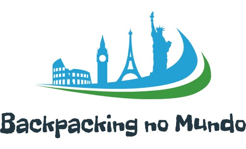

History
The history of Europe covers the people inhabiting Europe from prehistory to the present. During the Neolithic era and the time of the Indo-European migrations Europe saw human inflows from east and southeast and subsequent important cultural and material exchange. The period known as classical antiquity began with the emergence of the city-states of ancient Greece. Later, the Roman Empire came to dominate the entire Mediterranean basin. The fall of the Roman Empire in AD 476 traditionally marks the start of the Middle Ages. Beginning in the 14th century a Renaissance of knowledge challenged traditional doctrines in science and theology. Simultaneously, the Protestant Reformation set up Protestant churches primarily in Germany, Scandinavia and England. After 1800, the Industrial Revolution brought prosperity to Britain and Western Europe. The main powers set up colonies in most of the Americas and Africa, and parts of Asia. In the 20th century, World War I and World War II resulted in massive numbers of deaths. The Cold War dominated European geo-politics from 1947 to 1989.